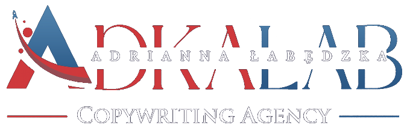
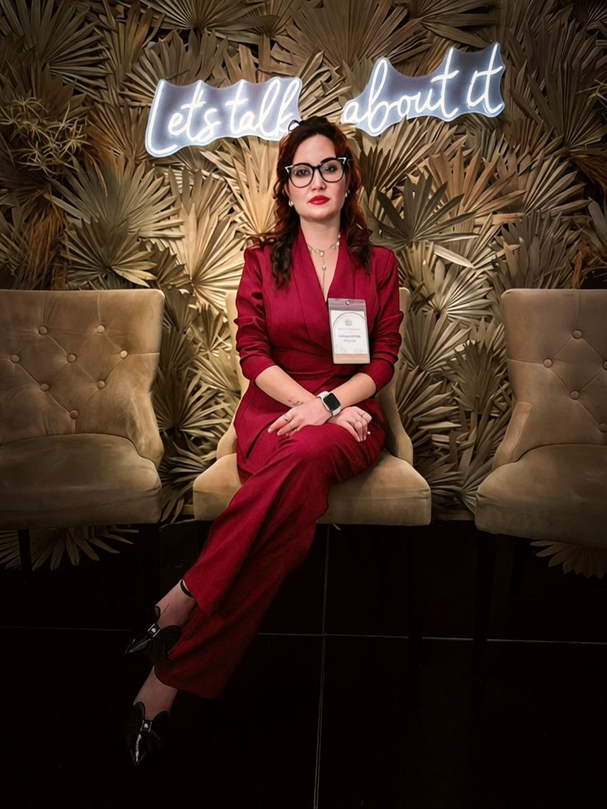
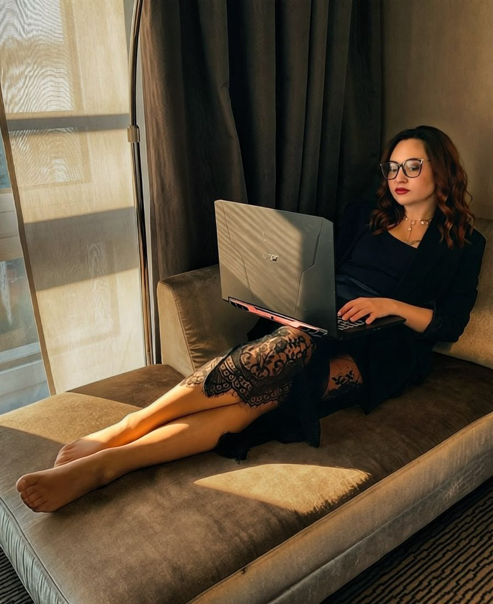
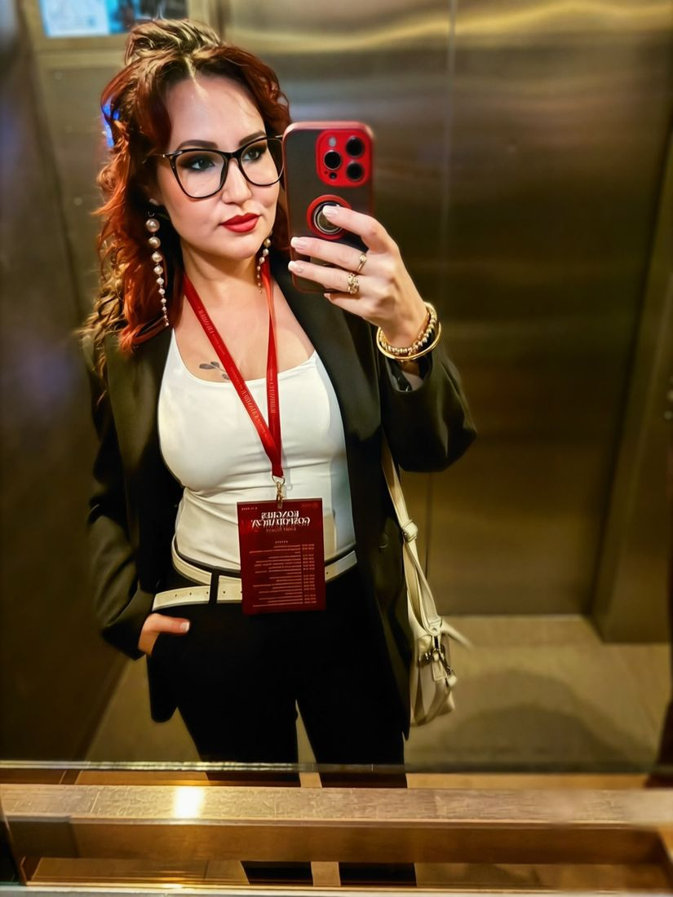
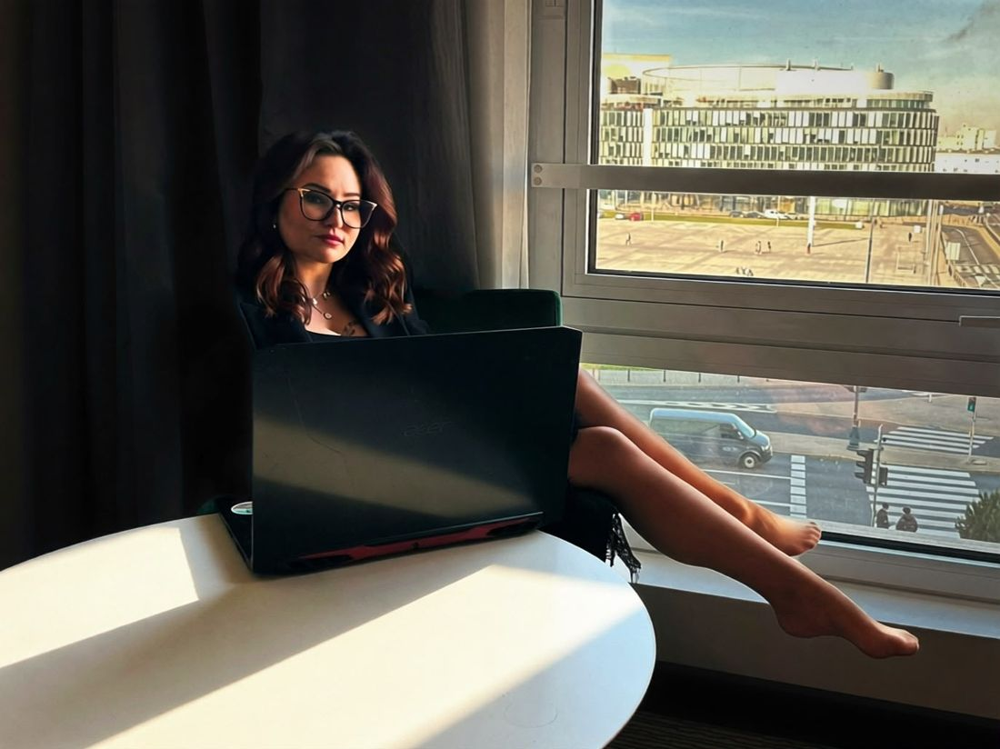

E-book · warsztat pisania
Praca dyplomowa? To pestka!
Od pomysłu na temat do gotowego konspektu i szkieletu pracy. Test wykonalności tematu, szukanie źródeł, konspekt, który prowadzi przez całe pisanie.
Dostępny w sklepie Naffy →
Piszę, redaguję i analizuję. Przygotowuję artykuły naukowe i dziennikarskie, prowadzę badania jakościowe i ilościowe, wspieram studentów przy pracach dyplomowych, a markom pomagam znaleźć własny głos.




Nazywam się Adrianna Łabędzka i prowadzę AdkaLab, agencję copywritingową z Kielc. Na co dzień łączę dwa światy, które rzadko rozmawiają ze sobą wprost: rygor pracy naukowej i komunikację, która ma działać w biznesie.
Piszę i redaguję teksty naukowe, opracowuję wyniki badań, przygotowuję analizy statystyczne i jakościowe. Studentom pomagam przejść przez pracę dyplomową od tematu do obrony. Firmom tworzę treści, audyty komunikacji i historie marki.
Jako dziennikarka Business Women Impact piszę o gospodarce, marketingu i technologii. W Polish Women Chamber of Commerce działam jako Vice Dyrektor Regionalna dla województwa świętokrzyskiego. Publikuję artykuły naukowe i występuję na konferencjach, ostatnio o generatywnej AI w nauce i biznesie oraz o bezpieczeństwie mieszkańców współczesnych metropolii.
Każde zlecenie zaczynam od pytania, kto będzie czytał tekst i co ma z nim zrobić. Od tego zależy forma: rozdział pracy, raport z badania, artykuł do magazynu czy opowieść o marce.
W zależności od tego, czego oczekujecie, wskazujemy kierunek i robimy to, co do nas należy. Czy potrzebujecie draftów, ofert, czy briefów, ujmujemy je w narrację, która pozwala osiągnąć sukces.
Oferty, analizy, rozdziały naukowe i artykuły, które przygotowałam dla klientów i redakcji. Kliknij projekt, żeby przejrzeć wszystkie jego strony.
Pokazuję wybrane strony. Pełne teksty i dodatkowe przykłady z danej dziedziny udostępniam na prośbę.
Od pomysłu na temat do gotowego konspektu i szkieletu pracy. Test wykonalności tematu, szukanie źródeł, konspekt, który prowadzi przez całe pisanie.
Dostępny w sklepie Naffy →Warsztat storytellingu dla małych firm: od pustej kartki do historii, która realnie sprzedaje. Pytania robocze i ćwiczenia do wypełnienia.
Dostępny w sklepie Naffy →Publikuję artykuły naukowe z obszaru nauk o bezpieczeństwie, komunikacji i zarządzania. Afiliacja naukowa: Uniwersytet Jagielloński.
iD ORCID 0009-0004-9839-8244„…za rozwój specjalistycznych usług redakcyjnych i analitycznych, łączących wiedzę naukową z praktyką komunikacji biznesowej i marketingowej.” Uzasadnienie z dyplomu przyznanego AdkaLab
6 listopada 2026 · Sofitel Warsaw Victoria
Opisz krótko temat, termin i cel. Odpowiem z propozycją zakresu i wyceną.